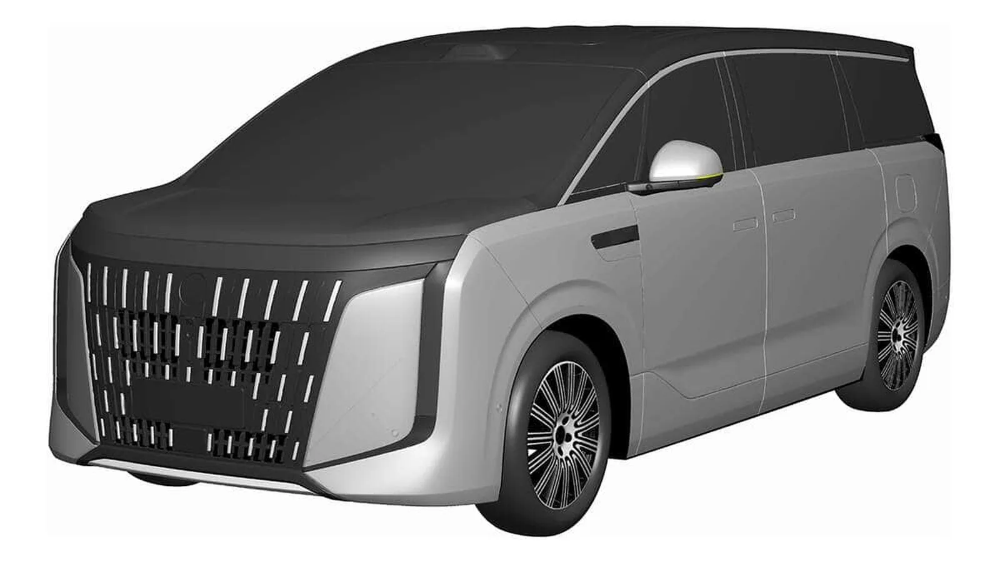
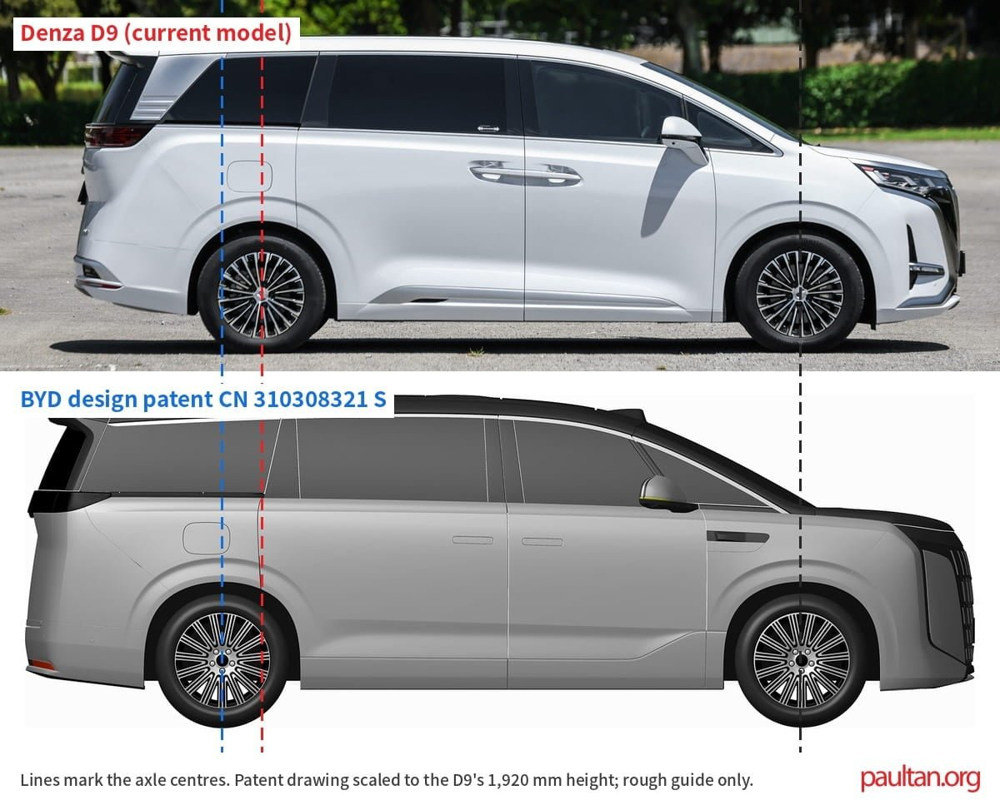

Denza · 專利 · 中國2026-11-11
Denza D9L 長軸 MPV 專利曝光：後軸往後移、換上全新車頭
Denza D9L long-wheelbase revealed in BYD design patent
中國國家知識產權局 11 月 10 日公開比亞迪一份外觀專利，中國媒體稱為 D9L，是 Denza D9 豪華 MPV 的長軸版。paultan.org 拿專利側視圖和現款 D9 比對，估算軸距約 3,340mm、比現款多約 230mm，車長約 5,480mm；官方尚未確認車名。
設計解析 Design Notes
- 比例前門與滑門看起來沒變，加長全在滑門後方：後輪往後移、第三排側窗明顯拉長，前後懸長度大致和現款相同。
- 車頭水箱護罩幾乎蓋滿整個車頭，由斷開的直立鍍鉻條組成，兩側是延伸到保險桿角落的銀色稜角飾板；上方一條細黑帶，中國媒體推測是貫穿式燈條。
- 車尾尾門窗下方一條深色橫帶、中央是攝影鏡頭，車頂擾流板有高位煞車燈，保險桿兩角有紅色燈條。
- 設計團隊專利列出 5 位設計人，包括比亞迪全球設計總監 Wolfgang Egger 與首席科學家廉玉波。